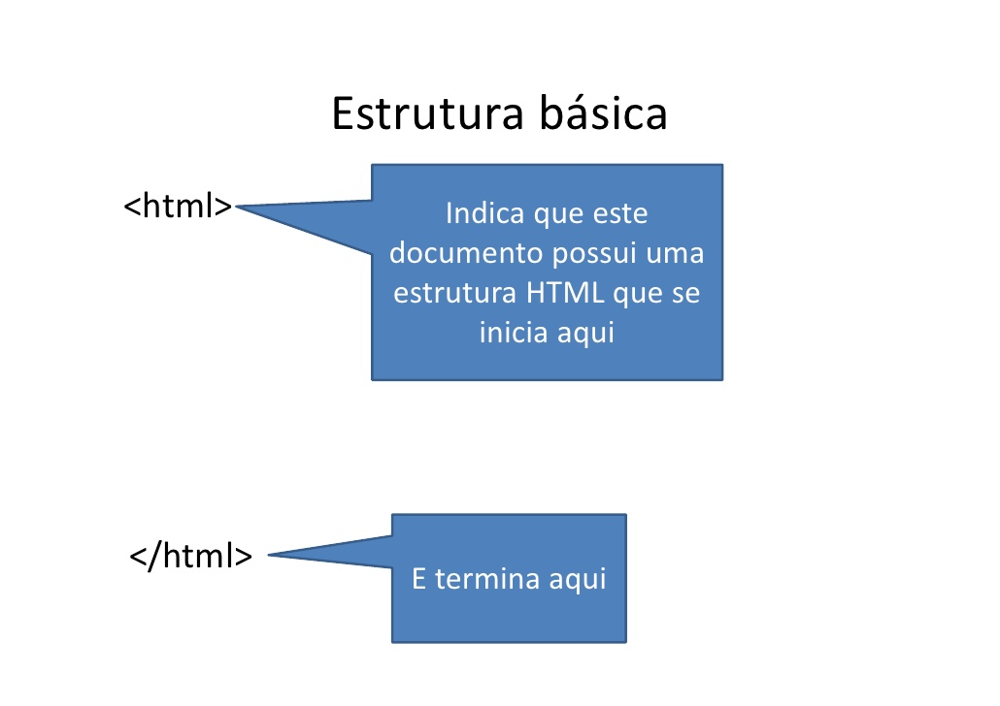
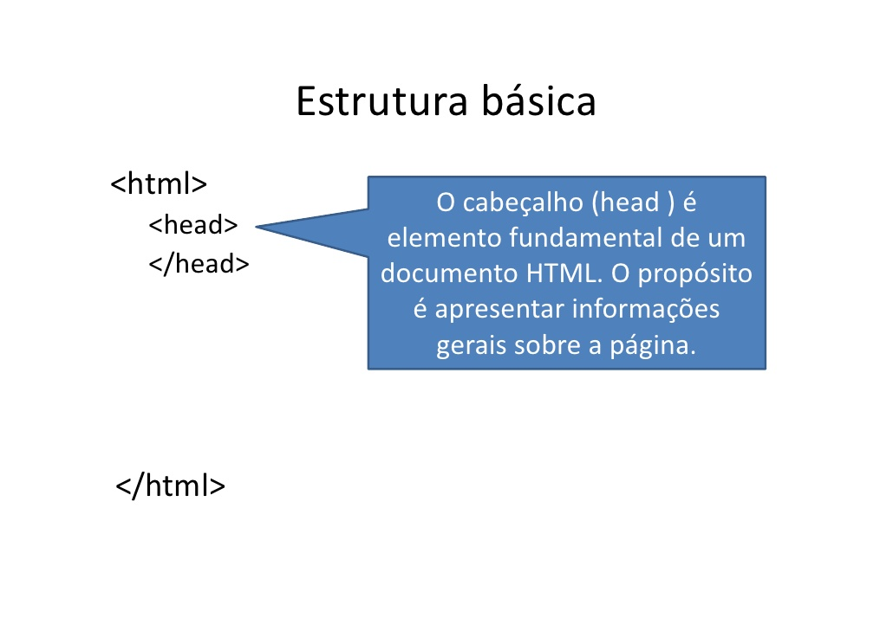

Seja bem vindo
Muito bem, estamos iniciando com os pimeiros passos com |

1. Bloco de comando principal do html
O primeiro passo que damos ao iniciar a construção de uma página HTML é identificar o bloco principal da linguagem que iremos usar.

Usamos para fazer isso as tags, que servem para criar as estruturas do documentos. Essas tags indicam para um software de um computador como queremos ue a página de internet que estamos criando deverá ser apresentada.
A página de internet tem como base um conjunto de tags html. Por questão de organização, precisamos indicar onde começam e onde terminam as tags . Isso dira ao browser que esse documento é um documento HTML
2. Bloco de comando do cabeçalho
O segundo passo que damos ao iniciar a construção de uma página HTML é a inclusão de um cabeçalho.

Aparece entre as tag de abertura e fechamento . Usa-se essa tag para identificar o autor, a data da última alteração e alguns recursos visuais construídos por um programador. Como o menu do site por exemplo.